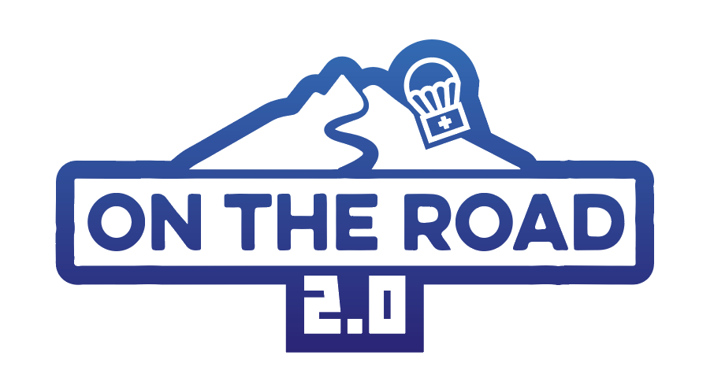

<nav class="navbar navbar-expand-lg navbar-dark">

  <a class="navbar-brand" href="#">
    
    <a class="navbar-brand pl-1" href="#">On the road 2.0</a>
  </a>


  <button class="navbar-toggler" type="button" data-toggle="collapse" data-target="#navbarSupportedContent" aria-controls="navbarSupportedContent"
    aria-expanded="false" aria-label="Toggle navigation">
    <span class="navbar-toggler-icon">
    </span>
  </button>

  <div class="collaspe navbar-collapse" id="navbarSupportedContent">

    <ul class="navbar-nav mr-auto">

      <li class="nav-item">

        <a class="nav-item nav-link" routerLink="/presentation" href="#">Présentation</a>

      </li>

      <li class="nav-item">

        <a class="nav-item nav-link" routerLink="/map" href="#">Jeux</a>

      </li>

    </ul>

    <ul class="navbar-nav">

      <!-- <a class="nav-link" style="cursor: pointer;" *ngIf="authService.loggedIn()" >{{userEmail}}</a> -->

      <a class="nav-item nav-link" routerLink="/presentation" href="#">Login</a>

    </ul>

    <ul class="navbar-nav">

      <a class="nav-link" style="cursor: pointer;" *ngIf="authService.loggedIn()" (click)="authService.logoutUser()">Déconnexion</a>

    </ul>

  </div>

</nav>

<div class="container">

  <router-outlet></router-outlet>

</div>

<nav class="navbar fixed-bottom  navbar-expand-lg navbar-dark">

  <div class="ynov-logo">
    
  </div>

  <h6 class="footer-police">&copy; Réalisé par, Equipe 31, Ingésup Ynov site d'Aix-en-Provence</h6>

</nav>
